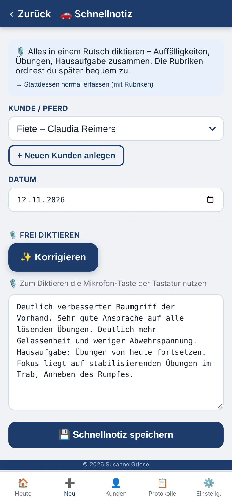
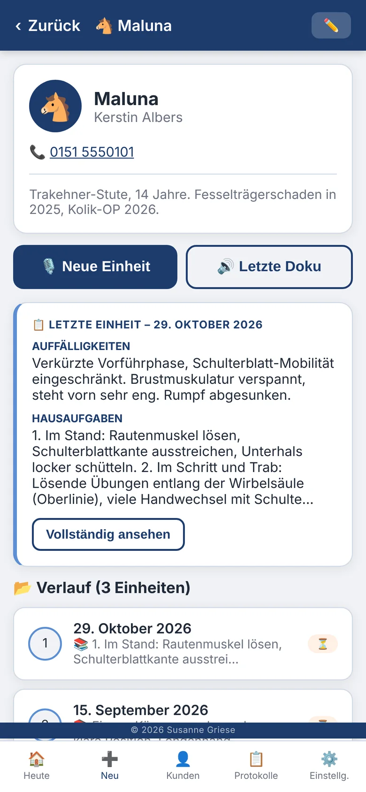

TrainingsDoku Pro
Im Auto zum nächsten Kunden. Und du grübelst.
Der letzte Termin liegt Wochen oder Monate zurück. Was habt ihr damals gemacht? Welche Probleme hatte das Pferd noch mal?
Wie professionell wäre es, wenn du schon im Auto ein kurzes Briefing bekommst und gut vorbereitet beim Kunden ankommst? Genau dafür ist TrainingsDoku Pro da: Die App liest dir die letzte Doku vor.
Gemacht ist sie für Trainer, Physiotherapeuten und Osteopathen, die mobil am Pferd arbeiten. Nach dem Termin diktierst du, was dir aufgefallen ist, was ihr gemacht habt und was der Besitzer üben soll. Daraus wird ein Protokoll, das du als PDF verschickst.
Ich habe die App für meine eigene Arbeit als Pferdetrainerin entwickelt und im Alltag immer weiter optimiert. Jetzt stelle ich sie auch anderen Trainern zur Verfügung.
Zur BestellungFunktionen ansehen
So läuft es im Alltag
Drei Schritte, mehr ist es nicht

1. Diktieren statt tippen
Direkt nach dem Termin, noch am Stall oder im Auto. Mit der Schnellnotiz sprichst du alles in einem Rutsch ein: Auffälligkeiten, Übungen, Hausaufgaben. Einsortiert wird später in Ruhe. Wer lieber gleich sauber arbeitet, diktiert direkt in die einzelnen Rubriken.
2. Protokoll an den Besitzer
Aus deinen Notizen wird ein Trainingsprotokoll mit Auffälligkeiten, Schwerpunkten der Einheit und Hausaufgaben. In deinen Firmenfarben, mit deinem Logo und deinem Namen. Du teilst es als PDF per WhatsApp oder Mail. Der Besitzer weiß schwarz auf weiß, was er bis zum nächsten Mal üben soll.


3. Vor dem nächsten Termin vorlesen lassen
Auf dem Weg zum Stall tippst du im Kundenprofil auf „Letzte Doku“. Die App liest dir vor, was beim letzten Mal auffiel und welche Hausaufgaben es gab. Du kommst an und weißt Bescheid.
Alle Bildschirmfotos zeigen erfundene Demo-Daten.
Für deine Kunden
Was dein Kunde davon hat
Vielen Kunden ist im Termin alles klar. Oder es ist so viel Input, dass ihnen gar keine Fragen einfallen. Die Unsicherheit kommt später, allein am Pferd: Was genau sollte ich tun? Wie war der Ablauf? Genau dann hilft eine kurze Zusammenfassung mit dem Fokus der Einheit und den Übungen, mit denen es weitergeht.
Sicherheit allein am Pferd
Dein Kunde liest im Stall nach, worauf es ankommt und was er üben soll. Er muss sich nicht auf sein Gedächtnis verlassen.
Zusammenfassung kurz nach dem Termin
Das Protokoll kommt, solange alles frisch ist. Eine Zusammenfassung so kurz nach dem Termin ist ein Alleinstellungsmerkmal, mit dem du dich abhebst.
Fortschritt wird sichtbar
Du kannst Fotos ins Protokoll einbauen. So dokumentierst du den Verlauf über die Zeit, und dein Kunde sieht, was sich verändert hat.
Bei meinen Kunden erprobt
Ich habe das Protokoll bei vielen meiner Kunden eingesetzt. Die Rückmeldungen waren durchweg positiv und begeistert.
Funktionen
Was die App kann
Diktieren in jedem Feld
Du nutzt die Diktierfunktion deines Handys, die Mikrofon-Taste der Tastatur. Am PC funktioniert es mit der Spracheingabe von Windows oder Mac.
Schnellnotiz für unterwegs
Alles frei einsprechen und speichern. Später markierst du die Textstellen und sortierst sie mit einem Tipp in Auffälligkeiten, Schwerpunkte und Hausaufgaben ein.
Fachbegriffe richtig geschrieben
Die Spracherkennung versteht Fachbegriffe oft falsch. Du hinterlegst deine Fachbegriffe und eine eigene Korrekturliste. Der Knopf „Korrigieren“ bessert den diktierten Text danach aus, direkt auf dem Gerät.
Protokoll mit festen Rubriken
Datum, Ort, Auffälligkeiten, Schwerpunkte der Einheit, Hausaufgaben, Fokus der nächsten Einheit und eine Einschätzung mit Sternen. Dazu bis zu drei Fotos pro Einheit.
PDF in deinem Auftritt
Logo, Firmenname und Farben stellst du selbst ein. Das fertige Protokoll teilst du über WhatsApp, Mail oder speicherst es als Datei.
Vorlesen zur Vorbereitung
Die letzte Doku eines Pferdes oder ein ganzes Protokoll lässt du dir vorlesen. Praktisch im Auto vor dem Termin.
Kunden und Pferde
Jedes Pferd hat ein Profil mit Besitzer, Telefonnummer, Notizen und dem Verlauf aller Einheiten. Mit der Suche findest du Pferd oder Kunde in Sekunden.
Liste und Kalender
Alle Protokolle siehst du als Liste oder im Monatskalender. Die Startseite zeigt dir die Einheiten von heute.
Datensicherung
Du exportierst alle Daten als Datei und kannst sie wieder einlesen. Für deine Sicherungen bist du selbst zuständig.
Mehrere Geräte
In der Cloud-Version gleicht die App deine Daten zwischen Handy, Tablet und PC ab. Der Speicher ist dein eigenes Konto, eingerichtet nach meiner Anleitung.
KI-Spracherkennung
Wer möchte, verbindet die App mit einem eigenen Konto bei einem Anbieter für Spracherkennung. Dann nimmst du direkt in der App auf. Das ist freiwillig und kostet beim Anbieter nach Verbrauch.
Vorteile
Warum ich sie so gebaut habe
Ich habe TrainingsDoku Pro zuerst für meine eigene Arbeit als Pferdetrainerin entwickelt. Deshalb sind alle Funktionen praxiserprobt. Befreundete Trainer haben die App getestet, und ihre Rückmeldungen sind in die Weiterentwicklung eingeflossen.
- Du bist auf den nächsten Termin vorbereitet, ohne Zettel zu suchen.
- Dein Kunde bekommt ein Protokoll mit Hausaufgaben in die Hand.
- Du diktierst, statt mit kalten Fingern zu tippen.
- Der Verlauf zeigt dir, wie sich ein Pferd über Wochen entwickelt.
Deins. Ohne Abo.
- Einmal kaufen, dauerhaft nutzen.
- Deine Kundendaten liegen auf deinem Gerät oder in deinem eigenen Speicher. Ich habe keinen Zugriff darauf.
- Läuft auf iPhone und Android als App auf dem Startbildschirm, ohne App Store. Am PC im Browser.
- Die Einrichtung machst du einmalig selbst, mit einer bebilderten Schritt-für-Schritt-Anleitung. Plane dafür etwa 30 Minuten ein.
Kosten
Laufende Kosten: aktueller Stand
Nach dem Kauf fallen nach aktuellem Stand (November 2026) keine laufenden Kosten für die App an. Im Einzelnen:
| Lokale Version | Läuft ohne fremde Dienste auf deinem Gerät. Keine laufenden Kosten. |
| Cloud-Version | Nutzt deine eigenen Konten bei Supabase (Datenspeicher) und Cloudflare (Bereitstellung der App). Beide Anbieter haben aktuell einen kostenlosen Tarif, auf den meine Anleitung ausgelegt ist. |
| KI-Spracherkennung | Freiwillige Zusatzfunktion mit eigener Registrierung beim Anbieter. Abgerechnet wird nach Verbrauch direkt zwischen dir und dem Anbieter. Ohne sie nutzt du die kostenlose Diktierfunktion deines Geräts. |
Wichtig: Das ist der aktuelle Stand. Wie lange Supabase und Cloudflare ihre kostenlosen Tarife anbieten und was sie umfassen, entscheiden allein diese Anbieter. Darauf habe ich keinen Einfluss und kann es nicht zusichern.
Updates und neue Versionen der App sind im Kaufpreis nicht enthalten.
Einmaliger Kaufpreis
89 €
inkl. 19 % MwSt. · kein Abo · lokale Version oder Cloud-Version
Einführungspreis: die ersten 10 Bestellungen zahlen 69 €
Ob du noch zu den ersten 10 gehörst, schreibe ich dir mit der Rechnung.
Per E-Mail bestellenNur für Unternehmer. Mit der Bestellung bestätigst du, dass du als Unternehmer im Rahmen deiner gewerblichen oder selbstständigen beruflichen Tätigkeit kaufst und nicht als Verbraucher im Sinne des § 13 BGB.
Es gelten die AGB TrainingsDoku Pro und die Lizenz- und Nutzungsbedingungen. Hinweise zum Umgang mit deinen Daten stehen in der Datenschutzerklärung.
Bestellung
So kommst du an die App
- Bestell-Mail schicken. Der Knopf öffnet eine vorbereitete E-Mail. Du trägst Variante, Firma oder Praxisname, deine Tätigkeit und die Rechnungsadresse ein.
- Rechnung erhalten. Ich schicke dir die Rechnung per E-Mail. Bezahlt wird per Vorkasse (Überweisung).
- App bekommen. Nach Zahlungseingang erhältst du die App mit Anleitung per E-Mail, in der Regel innerhalb von 48 Stunden.
- Einrichten und loslegen. Du folgst der Anleitung für iPhone oder Android und legst die App auf deinen Startbildschirm. Das dauert etwa 30 Minuten.
Hinweis: Die App wird nicht über den App Store vertrieben. Du richtest die Anwendung selbst ein und musst dafür einmalig ein wenig basteln. Mit der zugehörigen Anleitung dauert das etwa 30 min, danach läuft sie.
Der Knopf funktioniert nicht? Schreib mir an pferdeyoga-sg@gmx.de mit dem Betreff „Bestellung TrainingsDoku Pro“.
Für den Datenschutz gegenüber deinen eigenen Kunden bist du selbst verantwortlich, zum Beispiel für die Einwilligung zu Fotos.